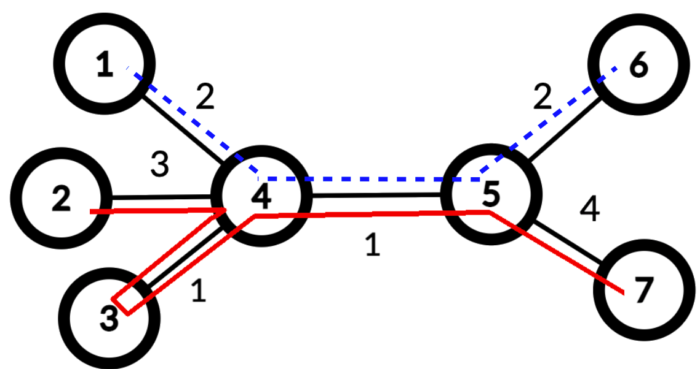

ICPC World Finals 2020 · Problem J
The Yllihc Engineering and Technological Institute (YETI), located in northern Snowblovia, has two problems: snow and money. Specifically, they have too much of the former and not enough of the latter. Every winter (and fall and spring, for that matter) the campus is covered with blankets of snow, and the sidewalks connecting campus buildings become impassable. To continue functioning, YETI needs to clear the snow from the sidewalks connecting the buildings of the campus. Since budget is an issue, these sidewalks are a minimal set that allow a path to exist between any two buildings.
With the money saved by not building more sidewalks, YETI bought two snow blowers. To clear the snow with them, two staff members take the two snow blowers out of the buildings (or building) they are stored in, and push them along the sidewalks, clearing the snow. Each sidewalk must be traversed at least once. Each snow blower, after it has finished, is stored in the building it is currently next to (and, during the next snowfall, the snow blowers will be pushed in the reverse direction—and so on, throughout the eleven months of the snow season).
The YETI maintenance crew want to choose the storage buildings of the snow blowers and design the routes along which they will be pushed, so that they minimize the total distance the two machines will travel out in the cold (to protect both the precious equipment and the staff members from freezing). Note that the routes might involve pushing along already-cleared sidewalks, as seen in Figure J.1, which shows an optimal solution for the sidewalk layout of Sample Input 1.

YETI would ask their Computer Science Department to figure this out, but it was wiped out in the Great Blizzard of ’06, so they have come to you for help.
The first line of input contains an integer n (4 ≤ n ≤ 100 000), the number of buildings on the YETI campus. Buildings are numbered from 1 to n. Each of the remaining n − 1 lines contains three integers a, b, and d indicating that a sidewalk exists between buildings a and b (1 ≤ a, b ≤ n; a ≠ b) of length d (1 ≤ d ≤ 500).
Output the minimum total distance the snow blowers must travel to remove snow from all sidewalks.
7 1 4 2 2 4 3 3 4 1 4 5 1 5 6 2 5 7 4
15
4 1 2 1 2 3 2 3 4 3
6